Как пользоваться пультом РемМонтаж
Это инструкция простыми словами. Здесь написано, куда нажимать, что означают цифры и какие листы можно не открывать.
1. С чего начать
Откройте браузер Chrome. Вверху справа должна быть почта alexsklad083@gmail.com. С другой почты пульт не откроется.
Дальше нужны только три ссылки. Их можно сохранить в закладки.
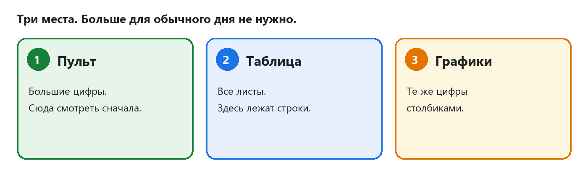
Три входа: пульт, таблица и графики
Сверху на пульте может быть голубая полоска: приложение создано пользователем Google. Это обычное предупреждение Google. Крестик справа её закрывает.
2. Откуда берётся цифра
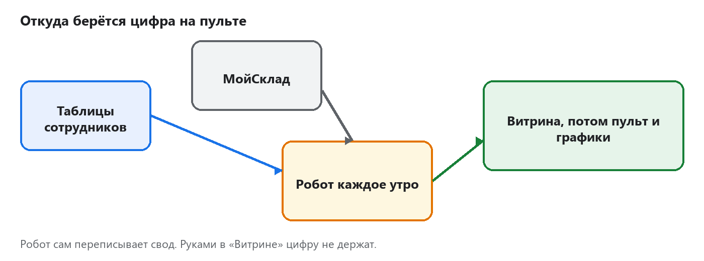
Путь строки: таблицы и МойСклад, робот, витрина, пульт
Сотрудники ведут свои таблицы. Складская программа МойСклад хранит карточки фирм и людей. Робот раз в день, около 07:00 по Москве, читает включённые листы и складывает строки в лист «Витрина». Пульт и графики показывают уже эту витрину.
Сейчас фирма в реестре одна: ООО РемМонтаж, код FR-001. Статус франшизы: ОТКЛЮЧЕН. Пока статус такой, утренний робот делает копию книги и новые строки не забирает. Учебный образец на пульте при этом виден.
3. Что видно на пульте
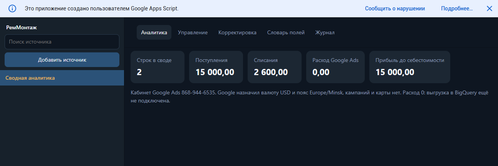
Пульт: пять карточек, список слева пустой
Слева пусто. Так и задумано, пока франшиза выключена. Справа пять карточек. Сейчас на них учебные числа:
- Строк в своде — 2. Это две учебные оплаты с пометкой ТЕСТ.
- Поступления — 15 000,00. Деньги, которые пришли.
- Списания — 2 600,00. Деньги, которые ушли.
- Расход Google Ads — 0,00. Рекламный кабинет есть, кампании и карты нет, выгрузка расхода не сохранена.
- Прибыль до себестоимости — 15 000,00.
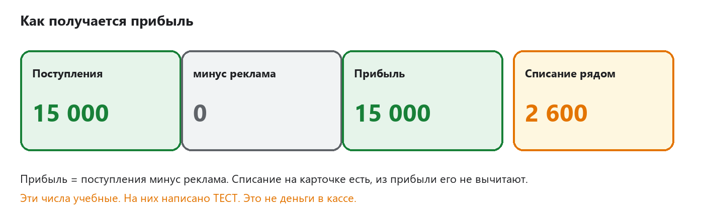
Прибыль равна поступлениям минус реклама. Списание стоит отдельно.
Себестоимость товаров из прибыли не вычитается. Поэтому карточка так и называется: прибыль до себестоимости.
Под карточками написано про рекламный кабинет 868-944-6535. Валюта там доллар, пояс Минск. Менять это самими руками не нужно.
4. Что делать утром
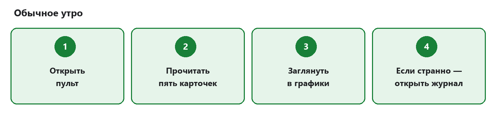
Четыре утренних шага
- Откройте пульт по ссылке из первого раздела.
- Прочитайте пять карточек. Запомните поступления, списание и прибыль.
- Откройте лист «Графики». Столбики должны совпасть с карточками.
- Если число выглядит странно, откройте лист «Журнал» и читайте нижние строки.
Пока франшиза выключена, слева на пульте имён нет. Это не поломка. Большие цифры сверху всё равно живые: в них входит учебный образец.
5. Цвета вкладок
Внизу таблицы у каждого листа свой цвет. Цвет подсказывает, открывать лист сегодня или нет.
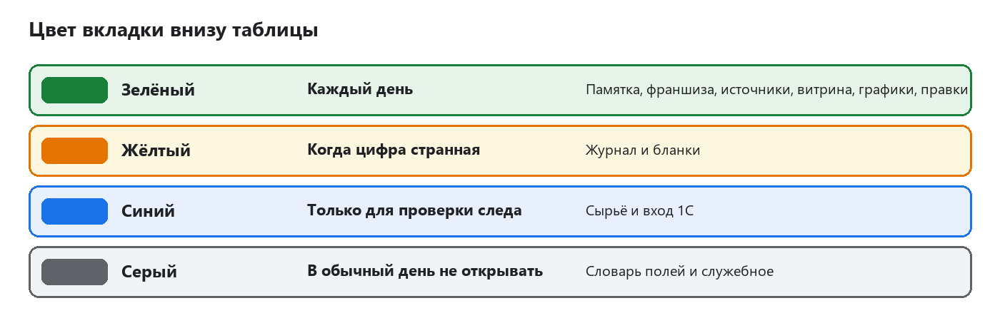
Зелёный каждый день, жёлтый при странной цифре, синий для следа, серый не для смены
Порядок листов слева направо: Памятка, Образец, Управление Франшизами, Источники, Витрина, Графики, Правки, Журнал, Бланки, Сырьё, Вход 1С, Словарь полей, Служебное.
6. Лист «Памятка»
Это короткая шпаргалка внутри самой таблицы. Зелёные строки — ежедневные листы. Жёлтые — когда сбор выглядит странно. Синие — технический след. Серые в смену не открывают.
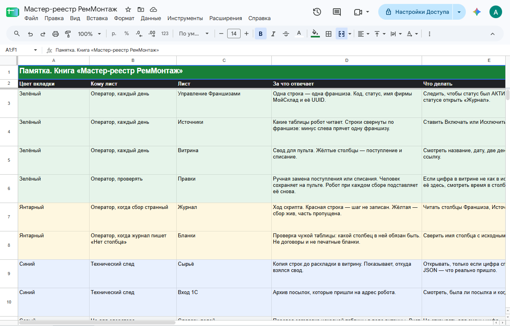
Лист Памятка
7. Лист «Образец»
Две жёлтые строки. На них написано ТЕСТ. Первая: 1 октября 2026, поступление 15 000. Вторая: 2 октября 2026, списание 2 500. Это пример для глаза. В кассе таких денег нет.
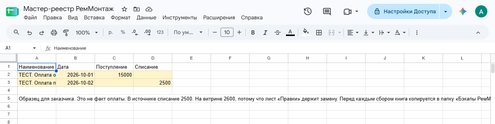
Две учебные строки на листе Образец
8. Лист «Витрина»
Сюда робот складывает все строки. Смотреть нужно жёлтые столбцы: поступление и списание. Внизу листа лежат учебные строки. У оплаты заказчика в поступлении 15 000. У оплаты поставщику в списании 2 600. Пять строк «ИМИТАЦИЯ» денег не несут: это пример товаров, не склад.
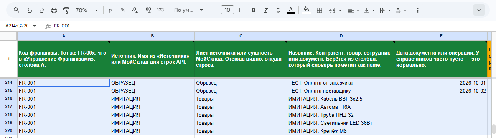
Внизу витрины учебные имена
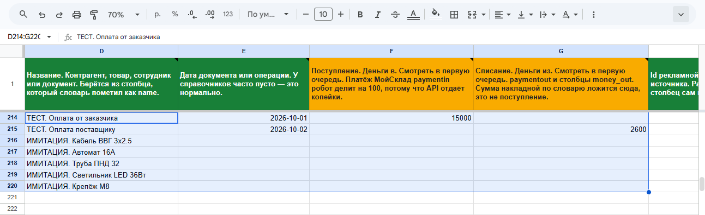
Жёлтые столбцы: поступление 15 000 и списание 2 600
Выше этих строк много настоящих имён контрагентов и сотрудников. Денег в тех строках нет. Пульт их в сумму 15 000 не кладёт, потому что франшиза выключена, а образец в сумму входит всегда.
Цифру в витрине насовсем не правят. Следующий сбор запишет лист заново. Постоянная замена живёт на листе «Правки».
9. Лист «Графики»
Те же пять чисел, что на пульте, плюс два рисунка. Левый столбик и правый столбик высокие: это 15 000. Средний низкий: это списание 2 600. Нижний рисунок показывает две учебные строки по именам. Синий цвет — поступление, красный — списание.
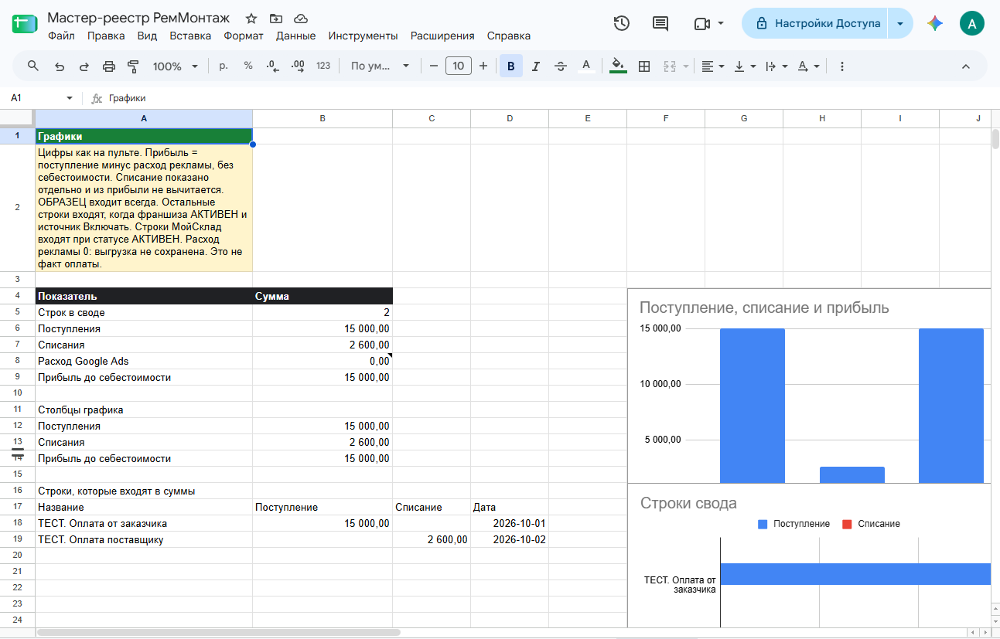
Лист Графики: числа и столбики. Синий — поступление, красный — списание.
Жёлтая записка на листе говорит то же самое: это не факт оплаты. Когда в витрине появятся новые деньги включённой франшизы, графики пересчитаются сами.
10. Лист «Правки»
Здесь одна учебная замена. В источнике списание поставщику равно 2 500. На витрине и на пульте оно равно 2 600. Разницу держит этот лист. Робот при каждом сборе снова подставляет 2 600.
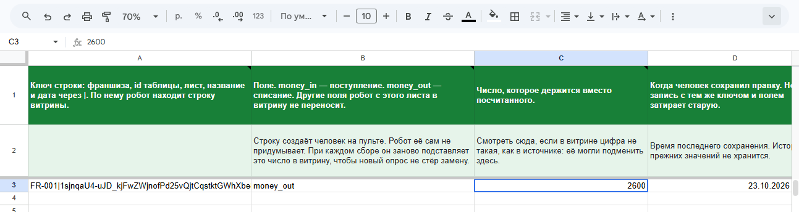
Лист Правки: списание 2 600 от 23 октября 2026
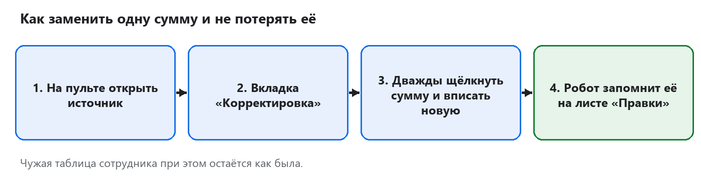
Четыре шага, чтобы сохранить свою сумму
Свой двойной щелчок на пульте получится тогда, когда слева появится имя источника. Пока франшиза выключена, список пустой, и новую правку с пульта не из чего выбрать. Уже записанная строка на листе «Правки» при этом работает.
Таблица сотрудника от правки не меняется. Меняется только число в своде.
11. Лист «Журнал»
Это дневник робота. Новые строки снизу. Цвет строки важнее длинного текста.
- Зелёная, уровень «ок» — шаг записан.
- Жёлтая, уровень «предупреждение» — сбор жив, кусок пропущен. Часто это незнакомый столбец. Его пропустили, остальное записали.
- Синяя, уровень «заметка» — это не поломка. Робот объясняет, почему шаг тихий.
- Красная, уровень «ошибка» — шаг не записан. Такую строку не стирают, пока причина не закрыта.
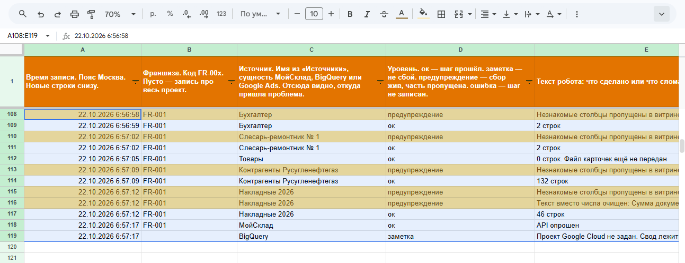
Журнал: зелёные и жёлтые строки утра 22 октября
На снимке нижняя синяя строка от 22 октября говорит, что проект Google Cloud не задан. Это старая запись. Сейчас проект задан, а живые цифры смотрят на пульте и на листе «Графики».
Строка «0 строк. Файл карточек ещё не передан» значит: настоящего файла товаров ещё нет. Пять жёлтых строк «ИМИТАЦИЯ» — только пример.
12. Остальные листы короткими словами
- Управление Франшизами. Одна рабочая строка: FR-001, ООО РемМонтаж, статус ОТКЛЮЧЕН. Короткое имя организации МойСклад: ooorusuglneftgaz. Длинный номер рядом — не пароль и не ключ. Столбец с ключом не стирать и никому в письме не пересылать.
- Источники. Список таблиц, которые робот умеет читать. Статус «Включать» значит «эта таблица нужна». Пока франшиза выключена, утро всё равно их пропускает. Подпись FR-002 сбор не запускает: отдельной рабочей франшизы с таким кодом нет.
- Бланки. Проверка, есть ли в чужой таблице нужный столбец. Сюда не кладут сканы и договоры.
- Сырьё. Черновик до витрины. Открывать, только если цифра спорит с источником. Руками не править.
- Вход 1С. Архив посылок для робота. Сами в витрину они не попадают.
- Словарь полей. Перевод заголовков. В смену не открывать и имена полей не переименовывать.
- Служебное. Настройки проекта. В смену не открывать. Регион EU не менять. Оплату Google не включать.
13. Если картина странная
- На пульте ноль строк, хотя образец на месте. Обновите страницу. Образец должен давать 2 строки, 15 000 и 2 600.
- На графике другие числа, чем на пульте. Подождите минуту: таблица пересчитывает формулы. Потом обновите оба окна.
- В журнале жёлтая строка про незнакомый столбец. Сбор при этом жив. Лишние столбцы робот пропускает.
- В журнале красная строка. Её не удаляют. Смотрят текст и лист, который в ней назван.
- Статус франшизы стал «ОШИБКА ТОКЕНА». Сбор склада остановился. Ключ в таблице не переписывают от руки.
- Слева на пульте пусто. При статусе ОТКЛЮЧЕН так и должно быть.
14. В обычный день эти места не трогать
- Ключ в листе «Управление Франшизами».
- Серые листы «Словарь полей» и «Служебное».
- Кнопка смены тарифа в МойСклад и любая оплата Google.
- Кнопка новой рекламной кампании.
- Чужие таблицы сотрудников: робот их читает и сам туда новые суммы не пишет.
- Жёлтые строки ТЕСТ и ИМИТАЦИЯ. Их не принимают за кассу и за склад. Перед настоящим файлом товаров пять жёлтых строк «ИМИТАЦИЯ» сначала убирают.
15. Все ссылки
В МойСклад заходят под своей учётной записью фирмы. Организация там называется «РУСУГЛЕНЕФТЕГАЗ О.». На экране кассы и франшизы имя остаётся «ООО РемМонтаж». Пробный срок МойСклад заканчивается 2 ноября 2026 в 12:32. Продлевать его или нет, решает заказчик. Кнопку выбора тарифа сами не нажимают.
16. Что на экране учебное, а что ещё впереди
Уже можно открывать пульт, реестр и графики. Ночная копия книги пишется сама, в папку Диска «Бэкапы РемМонтаж». Хранятся 14 последних копий.
Числа 15 000 и 2 600 — учебные. Настоящий файл товаров ещё не положен. Настоящих платежей в МойСклад нет. Расход рекламы равен нулю. Отдельный красивый отчёт Google из этой страны не открывается: его заменяет лист «Графики» и пульт.